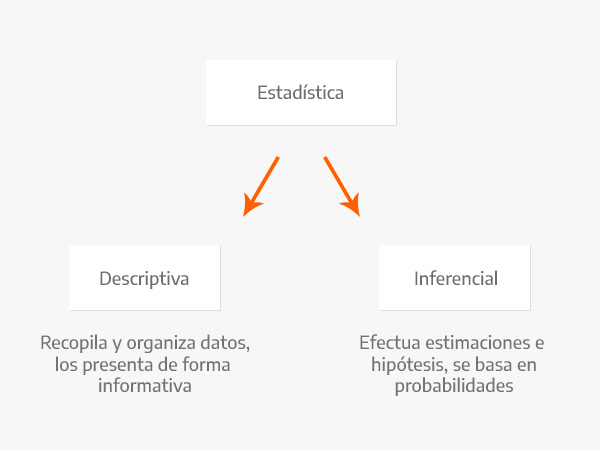
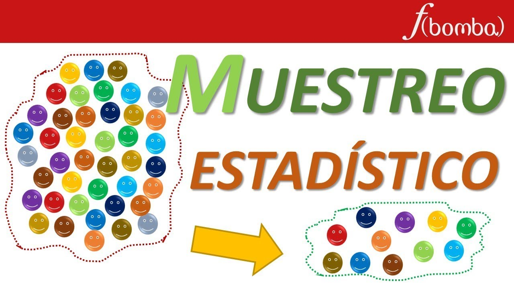
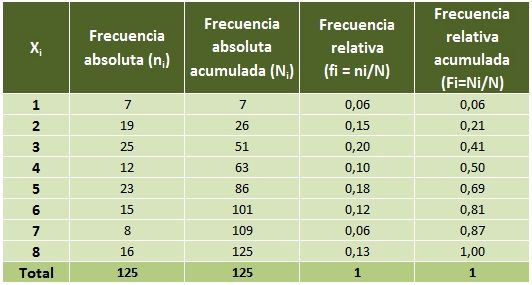

Manual de la asignatura
Probabilidad y Estadística
Plantear y solucionar problemas con base en los principios y teorías de física, química y matemáticas, a través del método científico para sustentar la toma de decisiones en los ámbitos científico y tecnológico.
Tercero
53
22
75
5
El alumno resolverá problemas estadísticos mediante el procesamiento de datos, así como el análisis y estimación de parámetros para fundamentar la toma de decisiones.
Evaluación
Saber

Más

Saber hacer

Más
Ser

Bibliografía
TEMA 1 - Teoría de conjuntos
Como introducción te invito a revisar el siguiente PDF sobre la teoría

TEMA 2 - Técnicas de conteo
Te invito a revisar el siguiente PDF sobre las técnicas de conteo, será con el que trabajaremos éste tema
TEMA 3 - Probabilidad condicional e independiente
Te invito a revisar el siguiente PDF sobre las técnicas de conteo, será con el que trabajaremos éste tema
Algunos ejercicios a resolver
TEMA 1 - Estadística descriptiva
La estadística descriptiva es una disciplina que se encarga de recoger, almacenar, ordenar, realizar tablas o gráficos y calcular parámetros básicos sobre el conjunto de datos.
Si quieres saber más sobre la definición, te invito a que le des click a la imágen:
TEMA 2 - Muestreo
El muestreo es una herramienta de la investigación científica, cuya función básica es determinar que parte de una población debe examinarse, con la finalidad de hacer inferencias sobre dicha población.
Click en la siguiente imágen para más información:
TEMA 3 - Frecuencias
La tabla de frecuencias es una herramienta que permite ordenar los datos de manera que se presentan numéricamente las características de la distribución de un conjunto de datos o muestra.
Para más información, click en la imágen:
Algunos ejercicios para la clase:
TEMA 1 - Estimaciones
Te dejo el siguiente video para iniciar con el tema

TEMA 2 - Pruebas de hipótesis
Definiciones
La hipótesis nula denotada por Ho, es la pretensión que inicialmente se supone verdadera (la pretensión de "creencia previa"). La hipótesis alternativa denotada por Ha, es la aseveración contradictoria de Ho. La hipótesis nula será rechazada en favor de la hipótesis alternativa sólo si la evidencia muestral sugiere que Ho es falsa. Si la muestra no contradice fuertemente a Ho se continuará creyendo en la factibilidad de la hipótesis nula. Las dos posibles conclusiones derivadas de un análisis de pruebas de hipótesis son entonces rechazar Ho o no rechazar Ho.
TEMA 3 - Regresión lineal y correlación
La correlación lineal y la regresión lineal simple son métodos estadísticos que estudian la relación lineal existente entre dos variables. Antes de profundizar en cada uno de ellos, conviene destacar algunas diferencias:
- La correlación cuantifica como de relacionadas están dos variables, mientras que la regresión lineal consiste en generar una ecuación (modelo) que, basándose en la relación existente entre ambas variables, permita predecir el valor de una a partir de la otra.
- El cálculo de la correlación entre dos variables es independiente del orden o asignación de cada variable a X e Y, mide únicamente la relación entre ambas sin considerar dependencias. En el caso de la regresión lineal, el modelo varía según qué variable se considere dependiente de la otra (lo cual no implica causa-efecto).
- A nivel experimental, la correlación se suele emplear cuando ninguna de las variables se ha controlado, simplemente se han medido ambas y se desea saber si están relacionadas. En el caso de estudios de regresión lineal, es más común que una de las variables se controle (tiempo, concentración de reactivo, temperatura…) y se mida la otra.
- Por norma general, los estudios de correlación lineal preceden a la generación de modelos de regresión lineal. Primero se analiza si ambas variables están correlacionadas y, en caso de estarlo, se procede a generar el modelo de regresión.